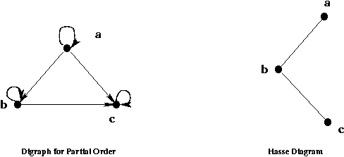

Relation
Order Relation
Subjects to be Learned
- partial order
- poset
- total/linear order
Contents
Shoppers in a grocery store are served at a cashier on the first-come-first-served basis. When there are many people at cashiers, lines are formed. People
in these lines are ordered for service: Those at the head of a line are served
sooner than those at the end. Cars waiting for the signal to change at an
intersection are also ordered similarly. Natural numbers can also be ordered
in the increasing order of their magnitude. Those are just a few
examples of order we encounter in our daily lives.
The order relations we are going
to study here are an abstraction of those relations. The properties common to
orders we see in our daily lives have been extracted and are used
to characterize the concepts of order.
Here we are going to learn three types of order: partial order, total order,
and quasi order.
Definition(partial order): A binary relation R on a set
A
is a
partial order
if and only if it is
(1) reflexive,
(2) antisymmetric, and
(3) transitive.
The ordered pair <A, R> is called a
poset (partially ordered set)
when R
is a partial order.
Example 1: The less-than-or-equal-to relation on the set of
integers I is a partial order, and the set I
with this relation
is a poset.
Example 2: The subset relation on the power set of a set, say
{1, 2} , is also a partial order, and the set {1, 2} with the subset relation
is a poset.
Definition(total order): A binary relation R on a set
A
is a
total order
if and only if it is
(1) a partial order, and
(2) for any pair of elements a and b of A,
< a, b >
 R
or
< b, a >
R.
R
or
< b, a >
R.
That is, every element is related with every element one way or the other.
A total order is also called a linear order.
Example 3: The less-than-or-equal-to relation on the set of
integers I is a total order.
The strictly-less-than and proper-subset relations are not partial order
because they are not reflexive. They are examples of some relation called
quasi order.
Definition(quasi order): A binary relation R on a set
A
is a
quasi order
if and only if it is
(1) irreflexive, and
(2) transitive.
A quasi order is necessarily antisymmetric as one can easily verify.
Caution Like many other definitions there is another fairly widely used definition of quasi order in the literature.
According to that definition a quasi order is a relation that is reflexive and transitive. That is something quite different
from "quasi order" we have defined here.
Click here
for some references on this.
Example 4: The less-than relation on the set of
integers I is a quasi order.
Example 5: The proper subset relation on the power set of a set, say
{1, 2} , is also a quasi order.
The concept of least/greatest number in a set of integers can be generalized
for a general poset. We start with the concepts of minimal/maximal elements.
For exercises go to the end of the next section
Next -- Order Relation (Minimal Element)
Back to Schedule
Back to Table of Contents
Order Relation - continued
Subjects to be Learned
- minimal element, maximal element
- least element, greatest element
- well order
- Hasse diagram
- topological order
- topological sort algorithm
Contents
Definition(minimal/maximal element): Let
< A,
 >
be a poset, where
represents an arbitrary partial order.
Then an element
b
A
is a minimal element of A
if there is no element
a
A
that satisfies
a
b.
Similarly an element
b
A
is a maximal element of A
if there is no element
a
A
that satisfies
b
a.
>
be a poset, where
represents an arbitrary partial order.
Then an element
b
A
is a minimal element of A
if there is no element
a
A
that satisfies
a
b.
Similarly an element
b
A
is a maximal element of A
if there is no element
a
A
that satisfies
b
a.
Example 6: The set of
{{1}, {2}, {1, 2}}
with  has two minimal
elements
{1}
and
{2}.
Note that {1}, and {2} are not related to each other in
.
Hence we can not say which is "smaller than" which, that is, they are not comparable.
has two minimal
elements
{1}
and
{2}.
Note that {1}, and {2} are not related to each other in
.
Hence we can not say which is "smaller than" which, that is, they are not comparable.
Definition(least/greatest element): Let
< A,
>
be a poset.
Then an element
b
A
is the least element of A
if for every element
a
A,
b
a.
Note that the least element of a poset is unique if one exists because of the antisymmetry of
.
Example 7: The poset of the set of natural numbers with the less-than-or-equal-to relation
has the least
element 0.
Example 8: The poset of the powerset of
{1, 2}
with
has the least
element
 .
.
Definition(well order): A total order R on a set
A
is a well order
if every non-empty subset of A has the least element.
Example 9: The poset of the set of natural numbers with the less-than-or-equal-to relation
is a well order, because every set of natural numbers has the least element.
The poset of the set of positive real numberes with the less-than-or-equal-to relation
is not a well order, because the set itself does not have any least element (0 is not in the set).
A digraph of a binary relation on a set can be simplified if the relation is
a partial order. Hasse diagrams defined as follows are such graphs.
Definition(Hasse diagram): A Hasse diagram
is a graph for a poset
which does not have loops and arcs implied by the transitivity.
Further, it is drawn so that all arcs point upward eliminating arrowheads.
To obtain the Hassse diagram of a poset, first remove the loops, then remove arcs
< a, b > if and only if there is an element c that < a, c > and < c, b >
exist in the given relation.
Example 10: For the relation
{< a, a >, < a, b >, < a, c >, < b, b >, < b, c >,
< c, c >}
on set
{a, b,c},
the Hasse diagram has the arcs
{< a, b >, < b, c >}
as shown below.

Topological Sorting
The elements in a finite poset can be ordered linearly in a number of ways
while preserving the partial order. For example
{,
{1}, {2},
{1, 2}} with the partial order
,
can be ordered linearly as
,
{1}, {2}, {1, 2},
or
,
{2}, {1}, {1, 2}.
In these orders a set appears before (to the left of) another set if it is
a subset of the other.
In real life, tasks for manufacturing goods in general can be partially ordered based on
the prerequisite relation, that is certain tasks must be completed
before certain other tasks can be started.
For example the arms of a chair must be carved before the chair is assembled.
Scheduling those tasks is essentially the same as arranging them with a linear order
(ignoring here some possible concurrent processing for simplicity's sake).
The topological sorting is a procedure to find from a partial order
on a finite set a linear order that does not violate the partial order. It is based on the fact that a finite poset has at least one minimal
element. The basic idea of the topological sorting is to first remove a minimal element from the given poset, and
then repeat that for the resulting set until no more elements are left.
The order of removal of the minimal elements gives a linear order. The following
algorithm formally describes the topological sorting.
Algorithm Topological Sort
Input: A finite poset <A, R>.
Output: A sequence of the elements of A preserving the order
R.
integer i;
i := 1;
while (
A
 )
{
)
{
pick a minimal element b from A;
A := A - {b};
i := i + 1;
output b
}
Example: Let A = {{1}, {2}, {3}, {1, 2}, {1, 3}, {2, 3}, {1, 2, 3}}
with the partial order
.
This given A has three minimal elements {1}, {2}, and {3}.
Select {2} and remove it from A. Let A denote
the resultant set
i.e. A := A - {2}.
The new A has two minimal elements {1}, and {3}.
Select {1} and remove it from A. Denote by A the resultant set, that is
A = {{3}, {1, 2}, {1, 3}, {2, 3}, {1, 2, 3}}.
This new A has two minimal elements {3} and {1, 2}.
Select {1, 2} and remove it from A.
Proceeding in like manner, we can obtain the following linear order:
{{2}, {1}, {1, 2}, {3}, {1, 3}, {2, 3}, {1, 2, 3}}.
Test Your Understanding of Order Relation
Indicate which of the following statements are correct and which are not.
Click Yes or No , then Submit. There are two sets of questions.
Next -- Definitions on Function
Back to Schedule
Back to Table of Contents